编译原理
本篇内容参考hit mooc 和 Stanford CS143 Compilers
实践内容使用LLVM 官方文档教程 和 PKU 编译实践
1. 程序设计语言及其文法
💡本章关注在计算机中如何表示语言及文法
1.1. 基本概念
-
字母表(alphabet) \(\Sigma\) 是一个有穷符号集合。例如:
- 二进制字母表: \(\{0, 1\}\)
- Unicode 字符集
-
字母表上的运算
- 乘积: \(\Sigma_1 \Sigma_2 = \{ab | a \in \Sigma_1 , b \in \Sigma_2\}\)
- 次幂: \(\Sigma^0 = \epsilon\) 即空串
- 正闭包(positive closure): \(\Sigma^+ = \Sigma \bigcup \Sigma^2 \bigcup \Sigma^3 \cdots\) 即字母表的正闭包：长度正数的符号串构成的集合
- 克林闭包(Kleene closure): \(\Sigma^* = \Sigma^+ \bigcup \Sigma^0\) 即字母表的克林闭包：任意符号串(可为空串)构成的集合
- 串(String)
- 设 \(\Sigma\) 是一个字母表， \(\forall x\in \Sigma^*\), \(x\) 称为是 \(\Sigma\) 上的一个 串
- 串\(s\)的长度\(|s|\)指\(s\)符号的个数
- 空串是长度为0的串，用\(\epsilon\)表示
- 串上的运算
- 连接(concatenation): 例，如果 x = dog 且 y = house ，那么 xy = doghouse
- 幂: \(s^1 = s^0s = \epsilon s = s,~s^2 = ss,~s^3 = sss\)
1.2. 文法的定义
文法的形式化定义如下：
\(G = (V_T, V_N, P, S)\)
-
\(V_T\): 终结符集合(terminal symbol) 是文法所定义的语言的基本符号，有时称为 token。
例如 \(V_T = \{apple, boy, eat, little\}\)
-
\(V_N\): 非终结符集合(nonterminal) 是用来表示语法成分的符号，有时也成为语法变量
例如 \(V_N = \{<句子>, <名词短语>, <动词短语>, <名词>, \cdots\}\)
-
\(P\): 产生式集合(production) 描述了将终结符和非终结符组合成串的方法。
产生式的一般形式：\(\alpha \rightarrow \beta\)
读作\(\alpha\)定义为\(\beta\)。其中\(\alpha\in (V_T\bigcup V_N)^+\) 且 α 中至少包含 \(V_N\) 中的一个元素：称为产生式的头部或左部；而其中\(\beta\in (V_T\bigcup V_N)^*\)：称为产生式的体或右部
-
\(S\): 开始符号，\(S\in V_N\)，表示的是该文法中最大的语法成分
例如： \(S\in <句子>\)
下图是一个简化版的算术表达式文法，该文法中只有一个非终结符\(E\)代表 表达式expression；有左括号，右括号，加号等终结符：
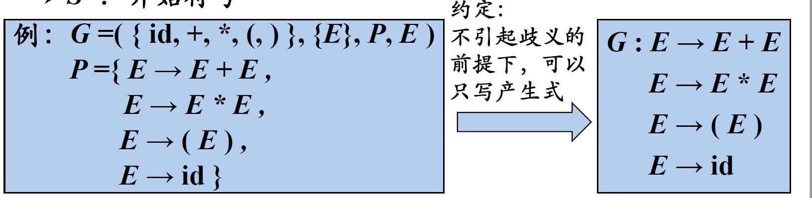
符号约定：
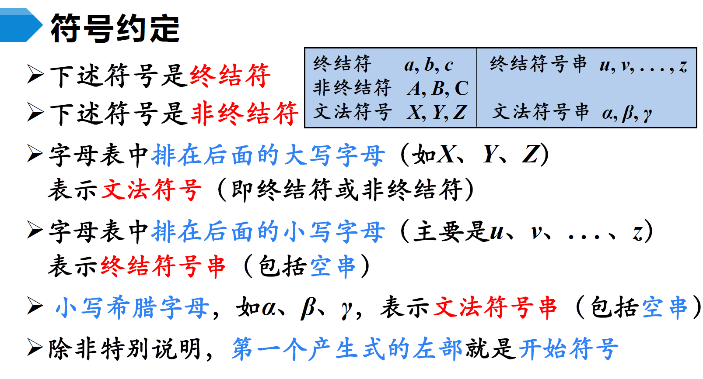
1.3. 语言的定义
在有了文法(语言规则)之后，如何判断某一词串是否是该语言的句子？
- 句子的 推导(derivations)(即用产生式的右边替换产生式的左边) 从 生成 语言的角度 来判断
- 句子的 归约(Reductions)(即用产生式的左边替换产生式的右边) 从 识别 语言的角度 来判断
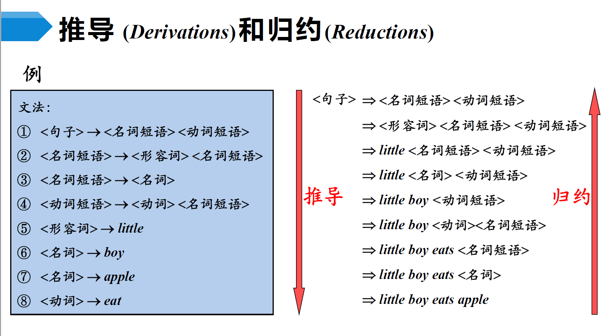
- 如果 \(S \Rightarrow^* \alpha\), \(\alpha\in (V_T \bigcup V_N)^*\) 则称\(\alpha\)是文法\(G\)的一个句型(sentential form)。句型中可以包含终结符和非终结符
- 如果一个句型中没有非终结符，则其是一个句子(sentence)
- 由文法\(G\)的开始符号\(S\)推出的所有句子构成的集合称为文法G生成的语言，记作\(L(G)\)
Note
\(E \rightarrow E+E | E*E | (E) | id\) 生成的语言中包含无穷个句子。
可以看到，文法通过递归的定义解决了无穷语言的有穷表示问题。
🚀下面是一个语言的例子：
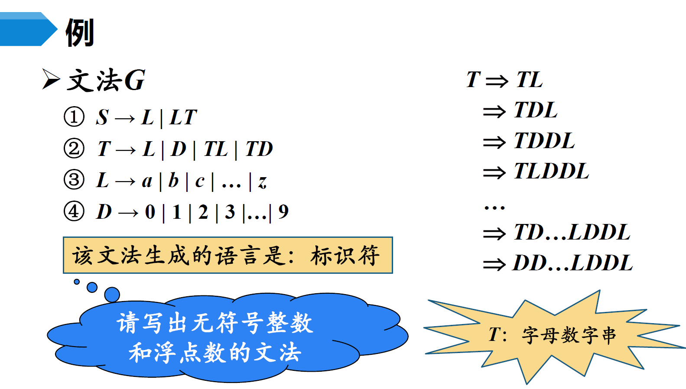
1.4. 文法的分类
Chomsky 文法分类
-
0型文法(Type 0 Grammar)
-
无限制文法(Unrestricted Grammar)/短语结构文法(Phrase Structure Grammar, PSG)
-
\(\forall \alpha \rightarrow \beta \in P\), \(\alpha\)中至少包含一个非终结符
-
-
1型文法(Type 1 Grammar)
-
上下文有关文法(Context Sensitive Grammar, CSG)
-
\(\forall \alpha \rightarrow \beta \in P\), \(|\alpha| \leq |\beta|\)
-
产生式的一般形式：\(\alpha_1 A \alpha_2 \rightarrow \alpha_1 \beta \alpha_2\) 其中 \(\beta \neq \epsilon\)，因为\(\alpha\)至少包含一个非终结符，因此其长度至少为1，\(\beta\)的长度因此大于0
-
-
2型文法(Type 2 Grammar)
-
上下文无关文法(Context-Free Grammar, CFG)
-
\(\forall \alpha \rightarrow \beta \in P\), \(\alpha \in V_N\)
-
产生式的一般形式：\(A \rightarrow \beta\) 其中 \(A\) 遵循前面的定义，表示非终结符(即将A替换成β不需要考虑上下文)
-
-
3型文法(Type-3 Grammar)
-
正则文法(Regulatr Grammar, RG)
-
右线性(Right Linear)文法: \(A\rightarrow wB | w\)， 其中\(w\)遵循前面的约定表示终结符号串，\(B\)表示非终结符
-
左线性(Left Linear)文法: \(A\rightarrow Bw | w\)， 其中\(w\)遵循前面的约定表示终结符号串，\(B\)表示非终结符
-
左线性文法和右线性文法都称为正则文法。即在正则文法中，产生式的右部最多只有一个非终结符，而且终结符必须在同一侧
🚀关于正则语法的一个例子(生成标识符):
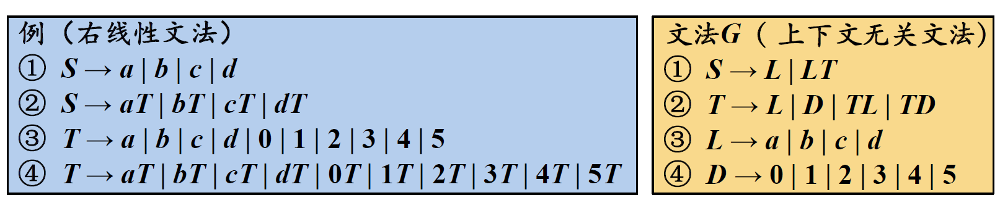
-
💡四种文法之间的关系： 正则文法能表示的最少，无限制文法能表示的最多。 任何一个正则语言都是一个上下文无关语言，但反过来不成立。也就是说，存在一些上下文无关语言不能由正则文法产生。
new bing 的回答：
0型文法是最强大的一种文法，它没有任何限制，可以描述任何一个图灵可识别的语言。0型文法对应于图灵机，它们具有最高的计算能力。
1型文法是一种上下文有关的文法，它要求产生式左边的长度不能超过右边。1型文法可以描述一些无限且复杂的语言，比如自然语言。1型文法对应于线性有界非确定图灵机，它们具有较高的计算能力。
2型文法是一种上下文无关的文法，它要求产生式左边只能有一个非终结符。2型文法可以描述一些简单且规则的语言，比如程序设计语言。2型文法对应于下推自动机，它们具有中等的计算能力。
3型文法是一种正则或右线性或左线性的文法，它要求产生式右边只能有一个非终结符，并且在最右或最左位置。3型文法可以描述一些有限且简单的语言，比如标识符或常数。3型文法对应于有限状态自动机或正则表达式，它们具有最低的计算能力。
四种类型之间存在包含关系：0型>1型>2型>3型。
1.5. CFG的分析树
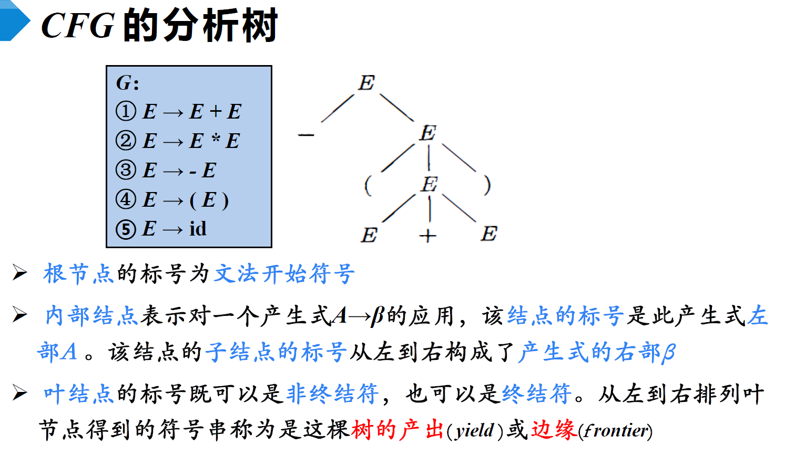
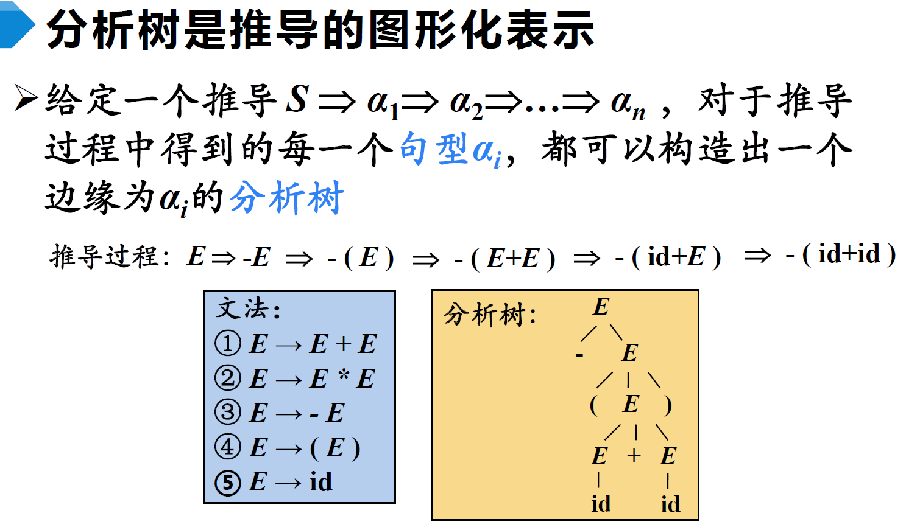
二义性文法(Ambiguous Grammar):
如果一个文法可以为某个句子生成多棵分析树，则称这个文法是二义性的。
🚀下面是一个存在二义性的文法，以及通过添加额外的消歧规则，确定唯一推导的例子：
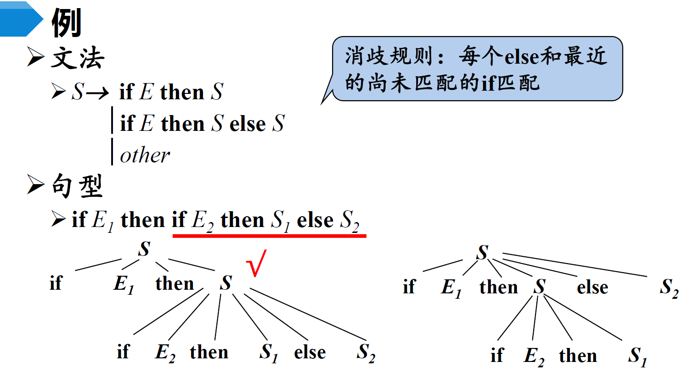
对于任意一个上下文无关文法，不存在一个算法，判定它是无二义性的；但能给出一组 充分条件，满足这组充分条件的文法是无二义性的。
2. 词法分析
2.1. 正则表达式和正则定义
程序语言中的大多数单词，都可以用正则文法来描述。正则表达式(Regular Expression, RE)是一种描述正则语言的更紧凑的方法。正则表达式和正则文法是等价的。
正则表达式可以由较小的正则表达式按照特定规则递归地构建。每个正则表达式r定义（表示）一个语言，记为\(L(r)\)。这个语言也是根据r的子表达式所表示的语言递归定义的。其正式定义如下：
- \(\epsilon\) 是一个RE， \(L(\epsilon) = \{\epsilon \}\)
- 如果\(a\in \Sigma\)， 则\(a\)是一个RE，\(L(a) = \{a\}\)
-
假设\(r\)和\(s\)都是RE，表示的语言分别是\(L(r)\)和\(L(s)\)， 则
- \(r|s\) 是一个RE, \(L(r|s) = L(r)\bigcup L(s)\)
- \(rs\) 是一个RE, \(L(rs) = L(r)L(s)\)
- \(r*\) 是一个RE, \(L(r*) = (L(r))*\)
- \((r)\) 是一个RE, \(L((r)) = L(r)\)
上面提到的运算优先级依次是 *、 连接、 |
🚀一个正则表达式的例子
-
十进制整数的RE:
\((1|\cdots|9)(0|\cdots|9)^*|0\)
-
八进制整数的RE:
\(0(0|1|2|3|4|5|6|7)(0|1|2|3|4|5|6|7)^*\)
-
十六进制整数的RE
\(0x(0|1|\cdots|9|a|\cdots|f|A|\cdots|F)(0|\cdots|9|a|\cdots|f|A|\cdots|F)^*\)
正则定义(RegularDefinition)是指，给一些RE命名，并在之后的RE中像使用字母表中的符号一样使用这些名字。
正则定义是具有如下形式的定义序列：\(d_1 \rightarrow r_1, d_2 \rightarrow r_2, \cdots, d_n \rightarrow r_n\) 。
- 其中每个\(d_i\)都是一个新符号，不在字母表\(\Sigma\)中，而且各不相同；
- 每个\(r_i\)是字母表\(\Sigma\bigcup {d_1,\cdots, d_{i-1}}\) 上的正则表达式。
🚀C语言中标识符的正则定义例子
- \(digit \rightarrow 0|1|2|\cdots|9\)
- \(letter\_ \rightarrow A|B|\cdots|Z|a|b|\cdots|z|\_\)
- \(id \rightarrow letter\_(letter\_|digit)^*\)
2.2. 有穷自动机(FA)
new bing:
FA模型是有限状态自动机的简称，它是一种最简单的计算机模型，只能识别正则语言。FA模型由一个有限的状态集合、一个输入符号集合、一个初始状态、一个终止状态集合和一个转移函数组成。FA模型在每个时刻只能处于一种状态，并根据输入符号和转移函数来改变状态。
图灵机模型是一种最强大的计算机模型，可以识别任何可计算的语言。图灵机模型由一个无限长的纸带、一个读写头、一个有限的控制规则和一个有限的状态集合组成。图灵机模型在每个时刻可以读取或写入纸带上的符号，并根据控制规则和当前状态来改变位置和状态。
有穷自动机( Finite Automata，FA )由两位神经物理学家MeCuloch和Pitts于1948年首先提出，是对一类处理系统建立的数学模型。
这类系统具有一系列离散的输入输出信息和有穷数目的内部状态（状态：概括了对过去输入信息处理的状况）。系统只需要根据当前所处的状态和当前面临的输入就可以决定系统的后继行为。每当系统处理了当前的输入后，系统的内部状态也将发生改变。
-
FA的表示：转换图(Transition Graph)
-
结点：FA的状态
- 初始状态（开始状态）：只有一个，由start箭头指向
- 终止状态（接收状态）：可以有多个，用双圈表示
-
带标记的有向边：如果对于输入a，存在一个从状态p到状态q的转换，就在p、q之间画一条有向边，并标记上a
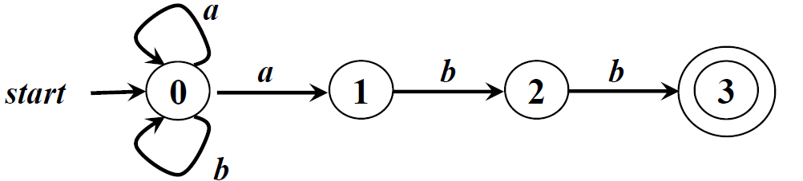
-
-
FA定义（接收）的语言
- 给定输入串x，如果存在一个对应于串x的从初始状态到某个终止状态的转换序列，则称串x被该FA接收
- 由一个有穷自动机\(M\)接收的所有串构成的集合称为是该FA定义（或接收）的语言，记为\(L(M)\)
🚀下面是一个非确定型(后面会解释)有穷自动机接受语言的例子
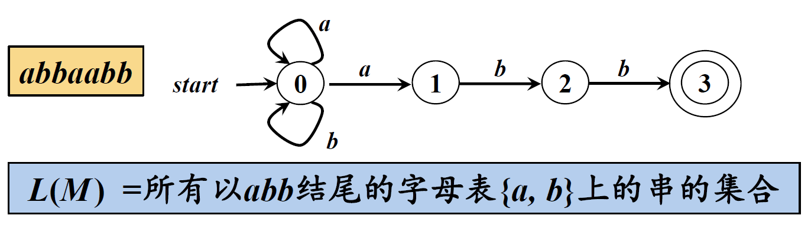
-
FA的最长子串匹配原则(LongestString MatchingPrinciple) 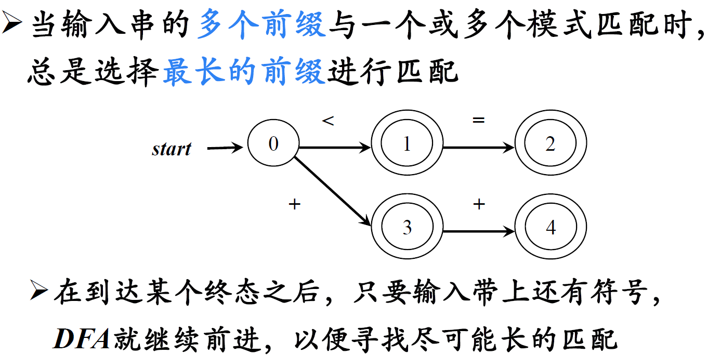
如果输入 <= 符号，则以状态2为终结状态，而不是仅匹配到状态1
-
FA的分类
-
确定的FA(Deterministic finite automata, DFA)
➡ 在一个确定状态对于给定输入，转移到一个特定状态
-
非确定的FA(Nondeterministic finite automata, NFA)
➡ 在一个确定状态对于给定输入，可能转移到多个状态
带有和不带有“ε-边”(空边)的NFA 也是等价的，可以相互转换
DFA和NFA两者是等价的，可以相互转换
-
正则文法⇔正则表达式⇔FA 。 接下来我们考虑如何将一个正则表达式表示成FA，通常我们会首先将正则表达式表示成NFA，再将NFA转化成计算机更容易实现的DFA。最终我们希望能够使用DFA对源码进行词法解析。
具体来说，正则表达式中的连接运算，或运算，克林闭包这三种运算在有穷自动机中的对应关系如下：
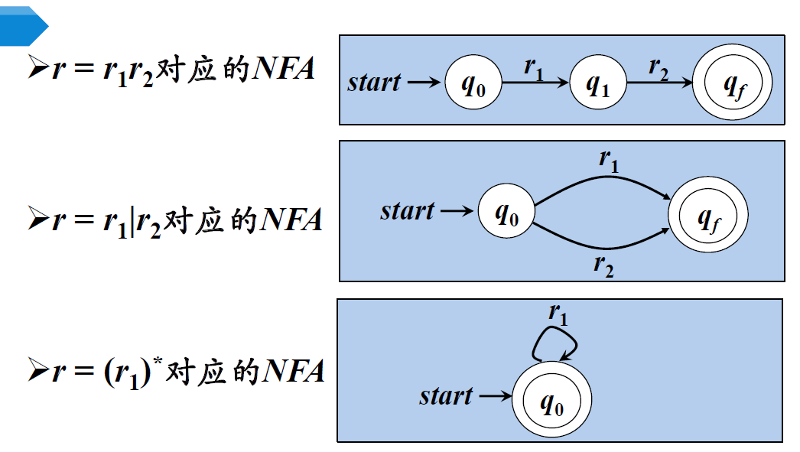
🚀一个例子 \((a|b)^*abb\) 对应的NFA：
2.3. NFA到DFA的转换
这里介绍子集构造法：
通常我们先写出NFA的转换表。NFA中一个状态可能在一个输入下转移到多个状态，直接把所有可能转移的状态构造成DFA的一个新的状态即可，这样一来，DFA的每个状态都是一个由NFA中的状态构成的集合,即NFA状态集合的一个子集。
🚀一个例子：
因为上图的NFA中含有空边，因此对于start状态，遇到输入0之后，可以转移到A、B、C中的任意一个状态